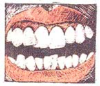

Pain From No Strain
Health news briefs on fibromyalgia, a dental study reveals why AIDS is not transmitted orally, correcting baby bites, a safe prenatal test.
Mother Earth News staff
September/October 1988
A hidden source of body aches.
When it concerns the fitness of body, mind or spirit, the editors of American Health are there, staying on top of up-to-date medical research, separating fad from fact and helping you preserve and improve life's most precious gift-your good health. Here are just a few items culled from recent and upcoming issues, including an often-missed explanation of mysterious body aches and pains, and a safe, fast method of prenatal testing that permits early diagnoses.
The "Great Masquerader"
Sore muscles? It might not be from too much exercise. You may be one of the 3 to 6 million Americans with a rheumatic condition called fibromyalgia or fibrositis that causes musculoskeletal aching, pain and stiffness (sites may shift) and fatigue. This soft-tissue disorder, sometimes dubbed the "great masquerader," doesn't show up on lab tests or x-rays, so the diagnosis is often made only after eliminating such possibilities as rheumatoid arthritis, hypothyroidism, polymyositis (a degenerative muscle disease), lupus erythematosus (a connective tissue disorder), or even such suspects as pinched nerves, bursitis, tendonitis and tennis elbow.
Fibromyalgia afflicts five times as many women as men, mainly between the ages of 25 and 55. Although the cause is unknown, the symptoms can, it seems, be brought on by acute emotional stress, viral infections, masked depression, anxiety or even a car accident. The aches may disappear within a few weeks, become chronic or recur at intervals.
Though some victims of this disease have been told to quit exercising, experts have found that a well-designed, moderate exercise program may strengthen muscles and relieve depression. (If you suspect you have fibromyalgia, consult a rheumatologist.)
Saliva Against AIDS
Though it has long been suspected that AIDS is not transmitted orally, a National Institute of Dental Research (NIDR) study is the first to show why: A protective factor comes from the salivary glands. NIDR research found that saliva is 100% effective in preventing infection of lymphocytes, the immune system cells the AIDS virus attacks-though it's not known what the protective factor is or how it works.
Saliva's defense against other infections, however, has its limits. It doesn't stop incubation and transmission of the less fragile Epstein-Barr and hepatitis B viruses, and the study doesn't totally rule out the possibility of AIDS being transmitted by deep kissing and oral sex. The virus could still enter into the blood stream through cuts in the mouth or might even infect certain immune cells that lie on the surface of the mouth. Studies are now underway to determine the substance in saliva that blocks the HIV virus. If this identification can be made, it could assist scientists in developing a treatment for AIDS.
Correcting Baby Bites
Orthodontists are now treating children with potential bite problems before their permanent teeth erupt-or even by their first birthday-and the results are good.
"Early treatment while the permanent teeth are still forming in the jaw can encourage normal growth and development. It's easier than making changes when the child is older," says Tufts University orthodontist Marcel Korn.
In the first phase, the youngster wears a banded wire or an acrylic functional appliance (toddlers start with a fixed device such as a bridge or crown). The second phase is a short fine-tuning stint in braces after the permanent teeth begin to erupt. Dental visits are less frequent than with later orthodontia-every two to four months instead of monthly-and briefer. .
A Safe Prenatal Test
A major government study now shows that chorionic villus sampling (CVS), a prenatal test which is done between the eighth and twelfth week of pregnancy, is as safe for the fetus as amniocentesis-which can't be done until the sixteenth week. This means that women in their older childbearing years will be able to get important prenatal diagnoses much earlier.
CVS involves suctioning, through the cervix, a few villi (fetal cells that eventually form the placenta) from the chorion, the outer membrane surrounding the embryo. To perform the procedure, doctors use an ultrasound-guided tube. Preliminary results can be available in a day or so. By contrast, it may take three or four weeks to get the results from amniocentesis.
CVS is already offered at 20 to 30 genetics testing centers across the country.
|
|
 |
 |